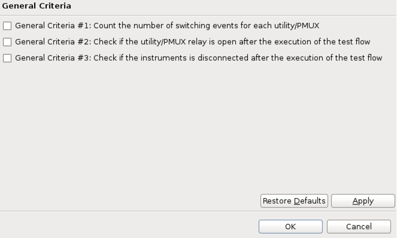

Preferences for general criteria
You can select the item to be checked in the testflow execution.
On the General Criteria page under Check general risks (SmartRDI based) in the Preferences window, select the criteria to be checked before executing the RDI alarm handling risk check.

- General Criteria #1: Count the number of switching events for each utility/PUMX
- By default, the relay if off. If it is turned on and turned off, this is counted as a
switch.
When the relay switching occurs on a pin, a risk is reported.
- General Criteria #2: Check if the utility/PUMX relay is open after the execution of the testflow
- After the execution, if the relay is still on, a risk is reported.
- General Criteria #3: Check if the instruments is disconnected after the execution of the test flow
- After the execution, if the pin is still connected, a risk is report.
Functional changes
- Introduced in SmarTest 7.10.2